Muraka Farm established
A local foundation for coral restoration and community conservation in Dharavandhoo.
Muraka Farm is a community-led environmental organisation based in Dharavandhoo, Baa Atoll, bringing restoration, education, research and local stewardship together.
This timeline uses verified milestones without assigning unconfirmed dates.
A local foundation for coral restoration and community conservation in Dharavandhoo.
A flagship community-based coral reef restoration programme.
Practical learning connects students with coral ecology, restoration and stewardship.
Muraka Farm's work was featured through the existing United Nations Maldives recognition documented on the homepage.
Muraka Farm combines practical restoration with environmental education, documentation, collaboration and long-term local care.
Muraka Farm is powered by local conservation leadership, volunteers and collaborators working together to protect and restore the reefs around Dharavandhoo.
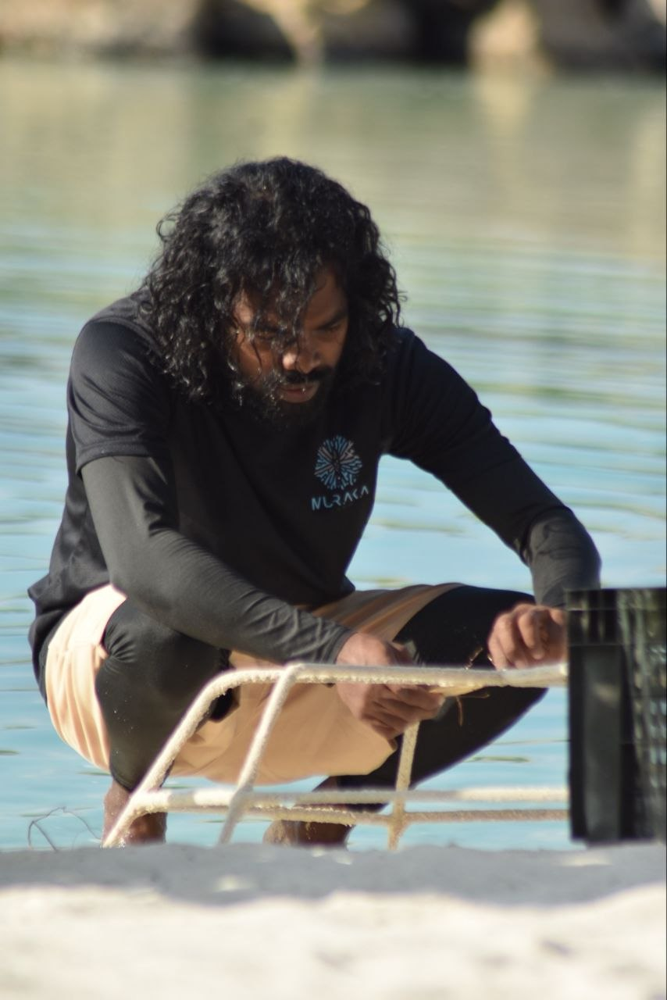
President
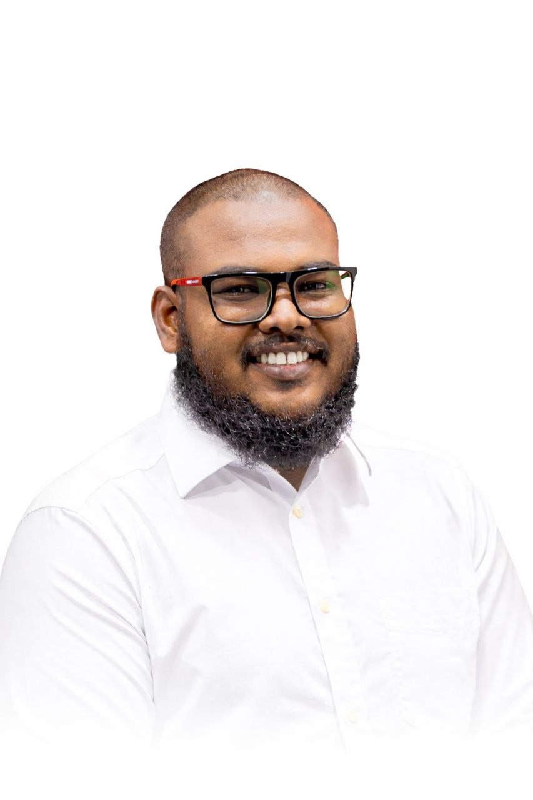
Vice President
.jpg)
Secretary General
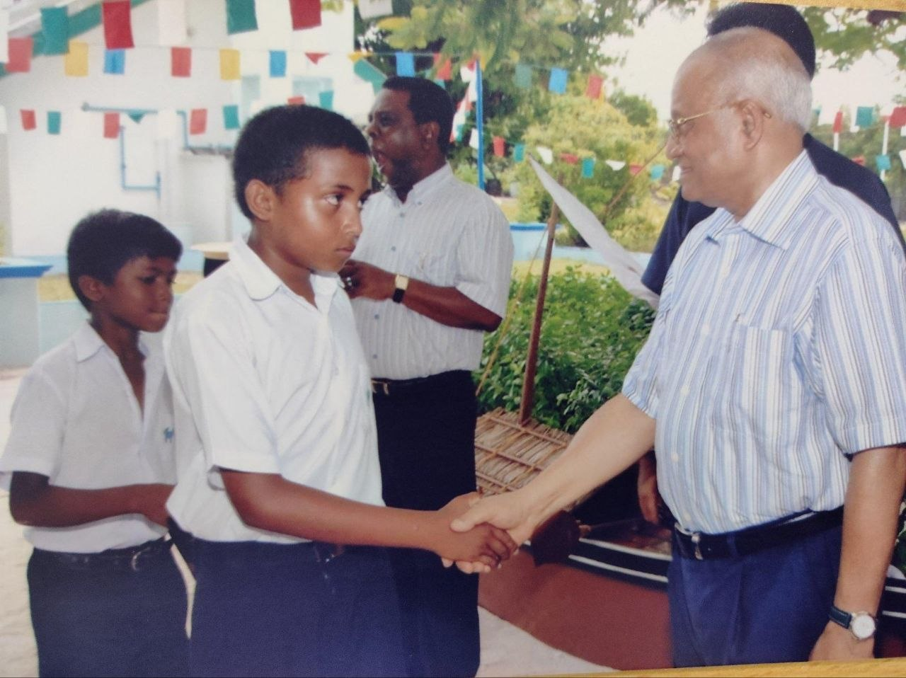
Treasurer
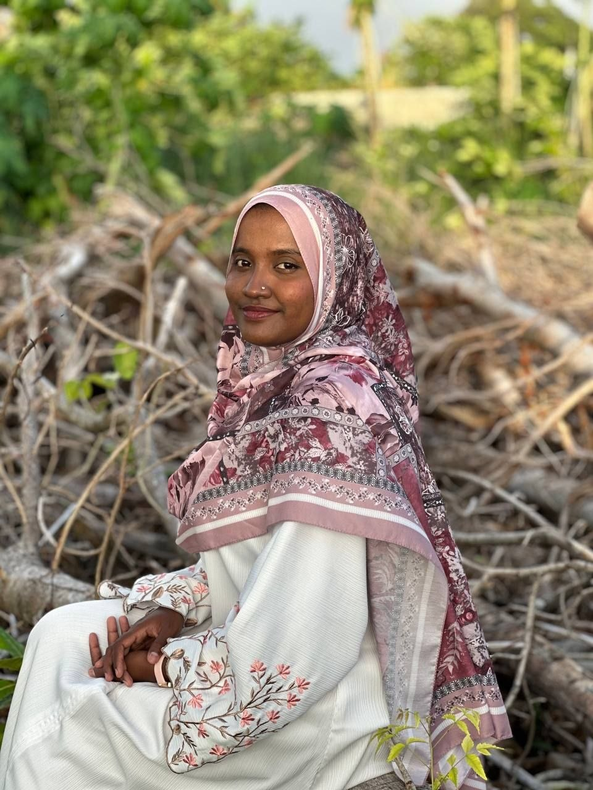
Projects Manager
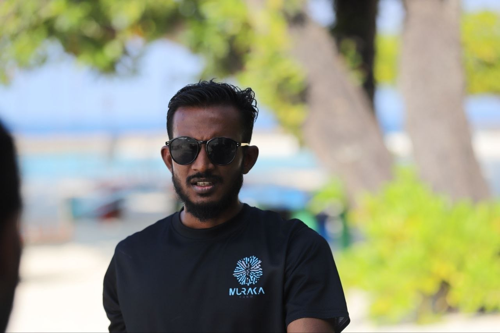
Event Manager
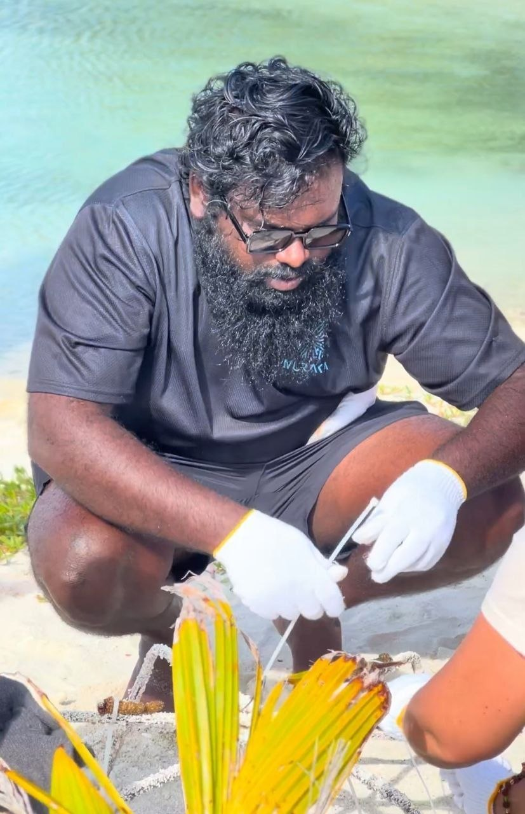
Event Coordinator
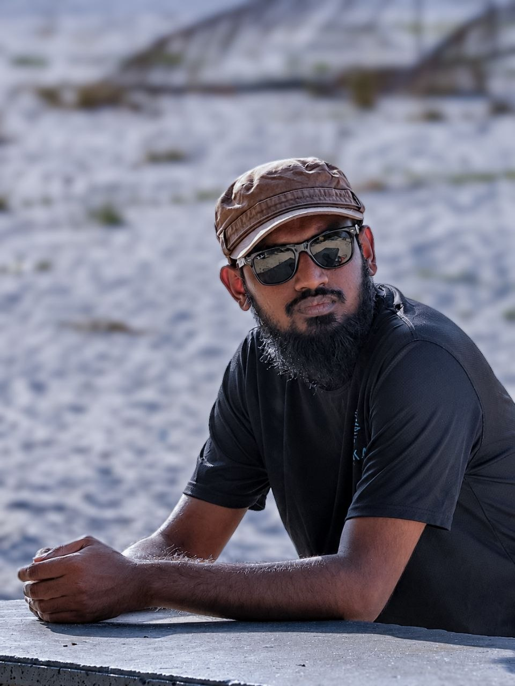
Media Coordinator
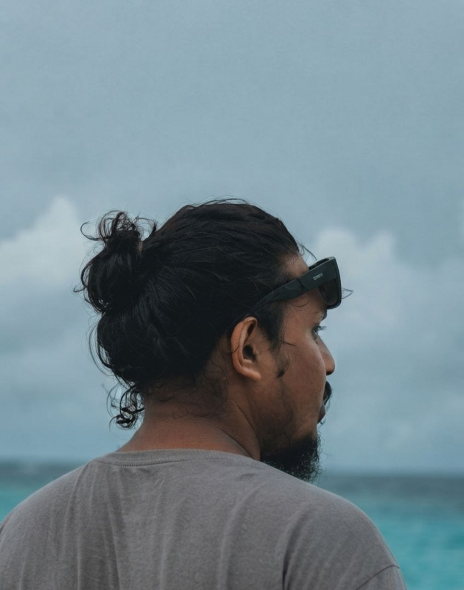
Graphics Designer
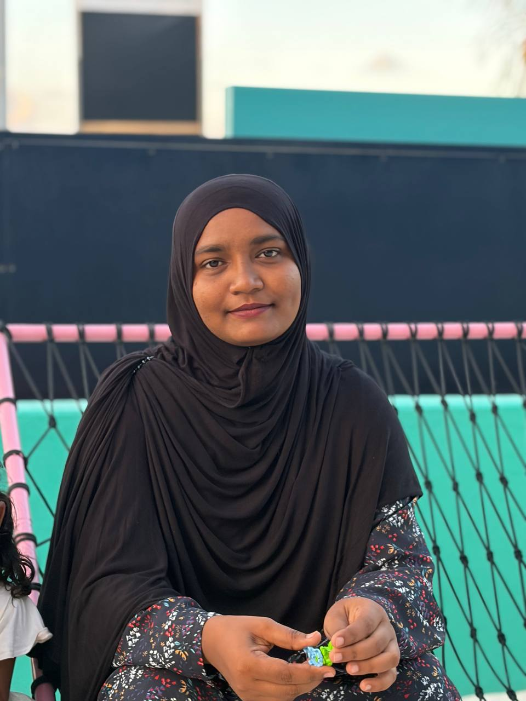
Muraka Member
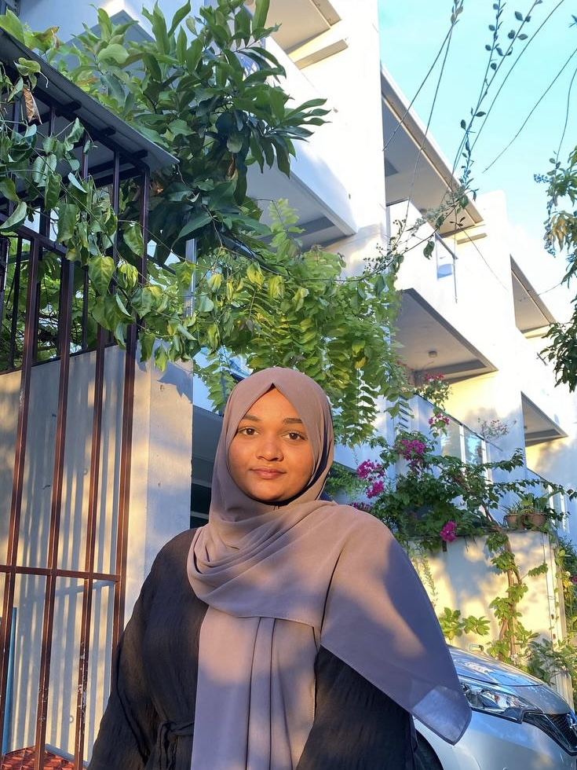
Muraka Member
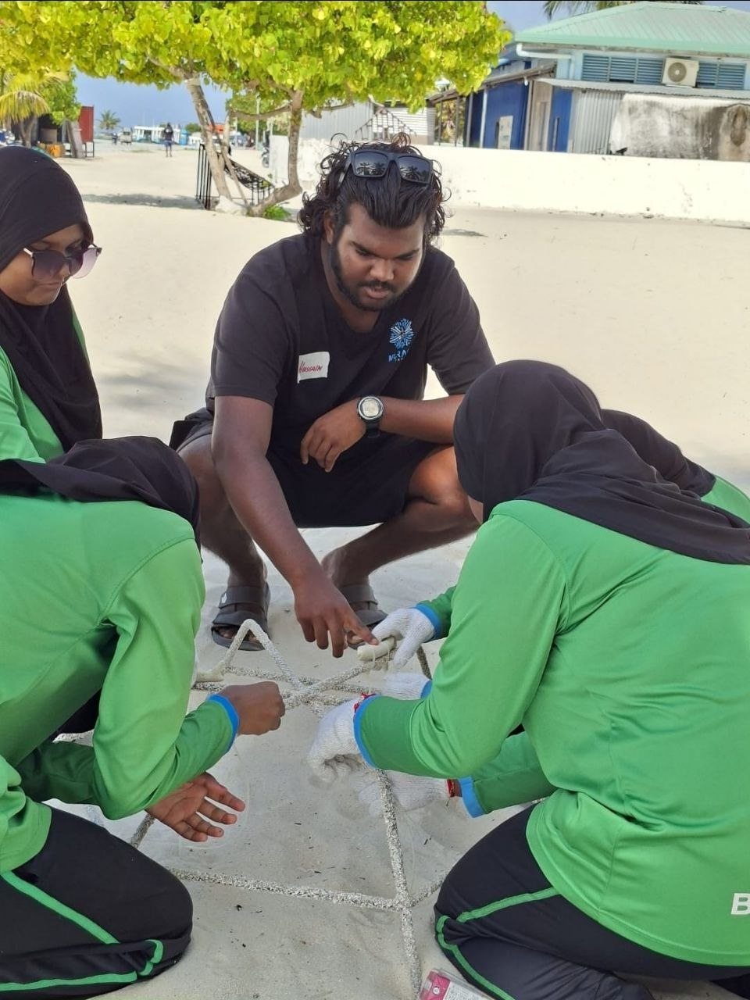
Muraka Member
Muraka Member
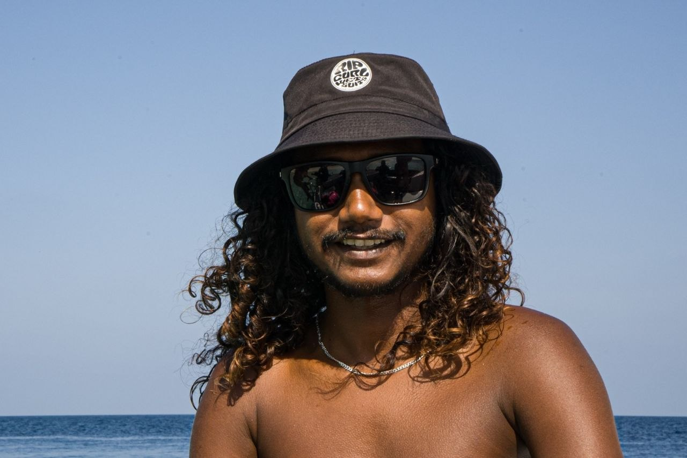
Muraka Member
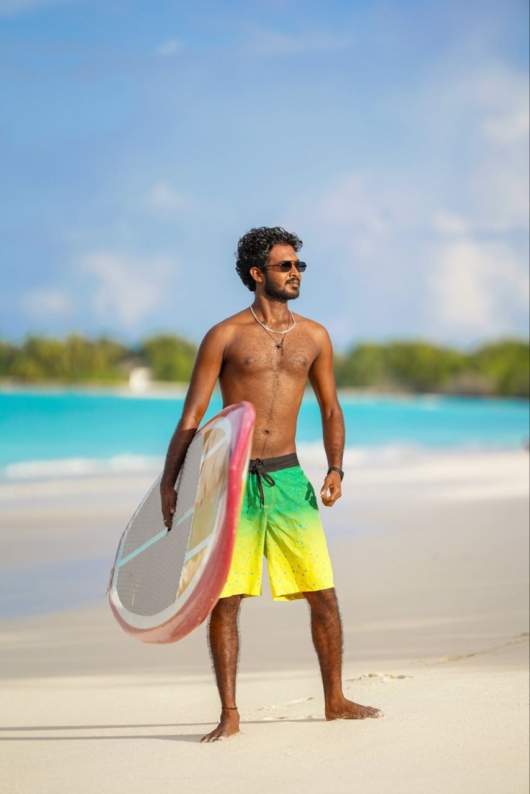
Muraka Member
Home of Muraka Farm and Dhirun's flagship restoration site in Baa Atoll, Maldives.